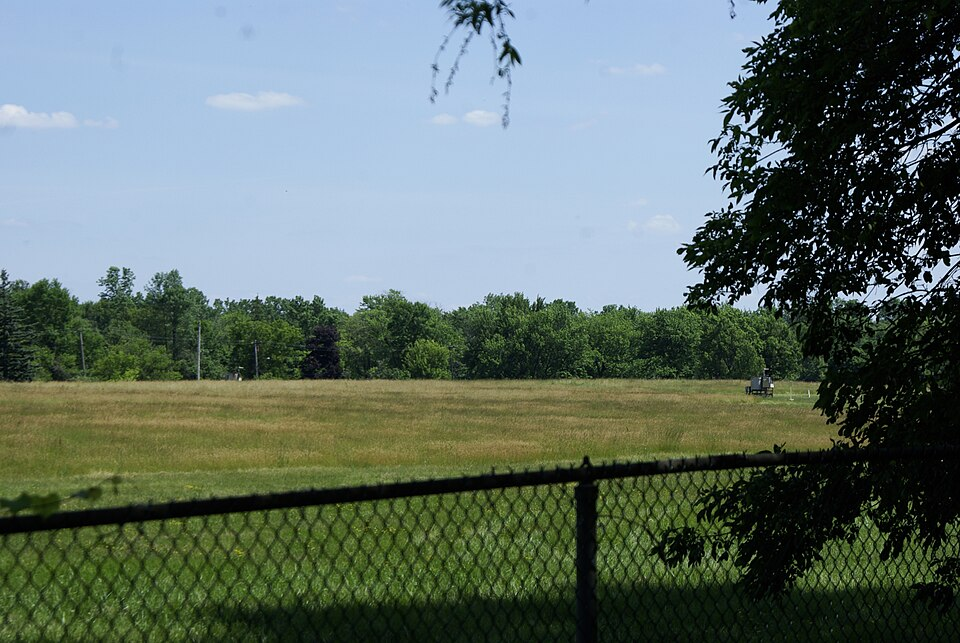

DOSSIER A42-CE-36 // CLIMATE & ENVIRONMENT
Love Canal toxic waste and government response


The claim
Claim: companies and officials concealed waste hazards. Disposal, exposure, delayed recognition, and evacuation are documented; individual knowledge needs dated records. This file tests the narrow allegation rather than treating secrecy, coincidence, or public controversy as evidence by themselves.
Chronology
Hooker Chemical disposed of waste before selling land in 1953; housing followed, reports rose in the 1970s, and federal action came in 1978. Chronology helps separate contemporaneous knowledge from later interpretation; sequence alone cannot establish a causal relationship.
Primary record and data
Company deeds, EPA files, health studies, and correspondence document disposal and response. Original records establish what was measured or decided, while independent work is needed to test methods and institutional conclusions.
Independent scientific evidence
Groundwater and disturbed soil moved chemicals; exposure depended on location and duration. Convergent observations and a plausible mechanism carry more weight than a single image, anecdote, or disputed quotation.
Alternative explanations
Early health studies had limits; varied symptoms and incomplete exposure histories complicate attribution. A strong alternative must explain the observations and remain open to disconfirmation; ordinary causes deserve the same scrutiny as extraordinary ones.
Limitations and uncertainty
Historical exposure and health records are incomplete and uneven; causal attribution, corporate knowledge, and intent are separate questions requiring separate evidence. Uncertainty is stated explicitly rather than treated as support for the strongest version of a claim.
Calibrated verdict
Waste disposal and failures are established; exact health impacts and decision knowledge require care. Documented research, emissions, negligence, or secrecy should not be conflated with a broader unsupported coordinated plot.
Testable evidence requirements
Compare deeds, company files, groundwater sampling, exposure histories, and dated agency decisions. A persuasive claim specifies what new evidence would change the assessment and allows independent replication, including negative results.
Sources and source limits
- U.S. EPA, Love Canal SitePrimary site and cleanup history.
- NY Department of Health, Love CanalPublic-health and exposure records.
- U.S. GAO, Love Canal ReportContemporary review of emergency response.